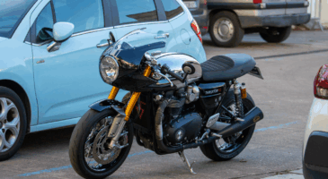

Djoloba Express
Votre santé ne s'arrête pas à votre porte.


Notre Ambassadeur Terrain
"Djoloba Express est porté par des partenaires locaux formés et sélectionnés par Mariane. Notre ambassadeur terrain est là pour vous accompagner en toute sécurité lors de vos déplacements de santé."
💬 Contacter l'ambassadeur🛠️ Nos Services
Livraison de médicaments (Moto)
Vous êtes bloqué à la maison ? Le pharmacien valide vos besoins (pansements, paracétamol...), notre partenaire passe les récupérer et vous les livre rapidement.
💊 Demander une livraison
Transport Confort (Voiture)
Vous êtes très faible, âgé ou à mobilité réduite ? Réservez notre véhicule confortable pour vous rendre à la clinique ou à l'hôpital en toute sécurité.
🚗 Réserver une voiture📊 Enquête de terrain
En tant que sociologue santé, notre ambassadeur réalise des enquêtes pour comprendre les réalités de l'accès aux soins dans votre quartier. Vos réponses aident Le Pouls Numérique à mieux vous informer.
Répondre à l'enquête (2 min)